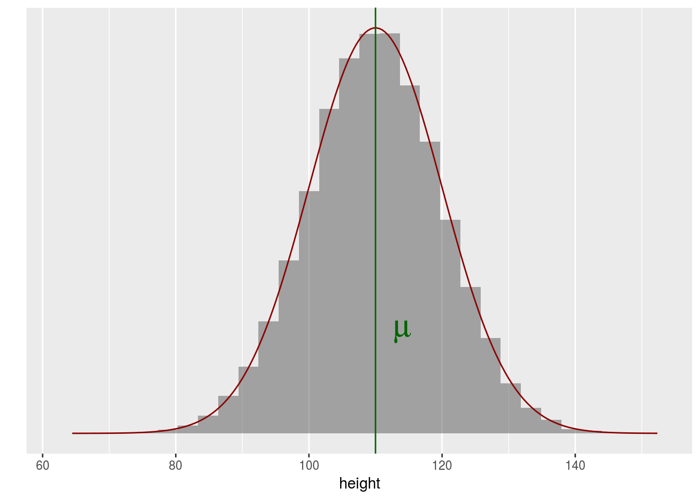
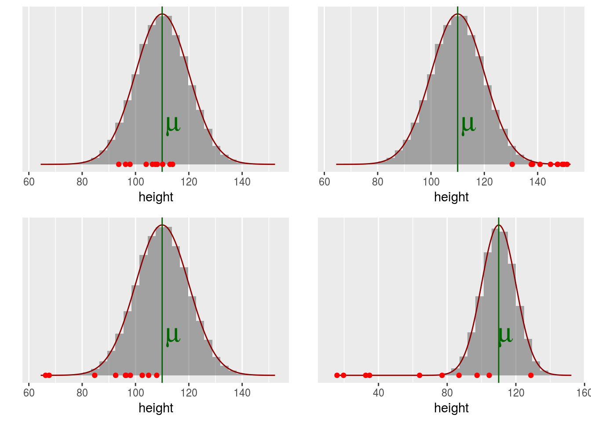
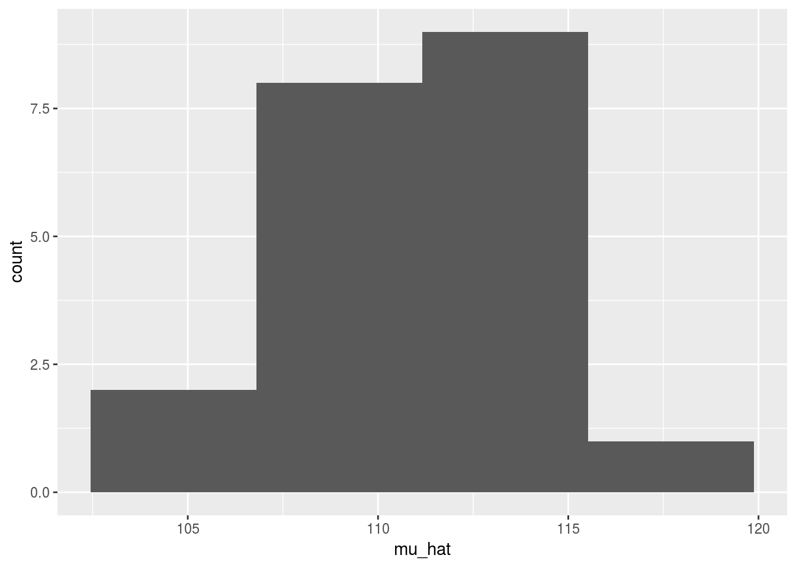
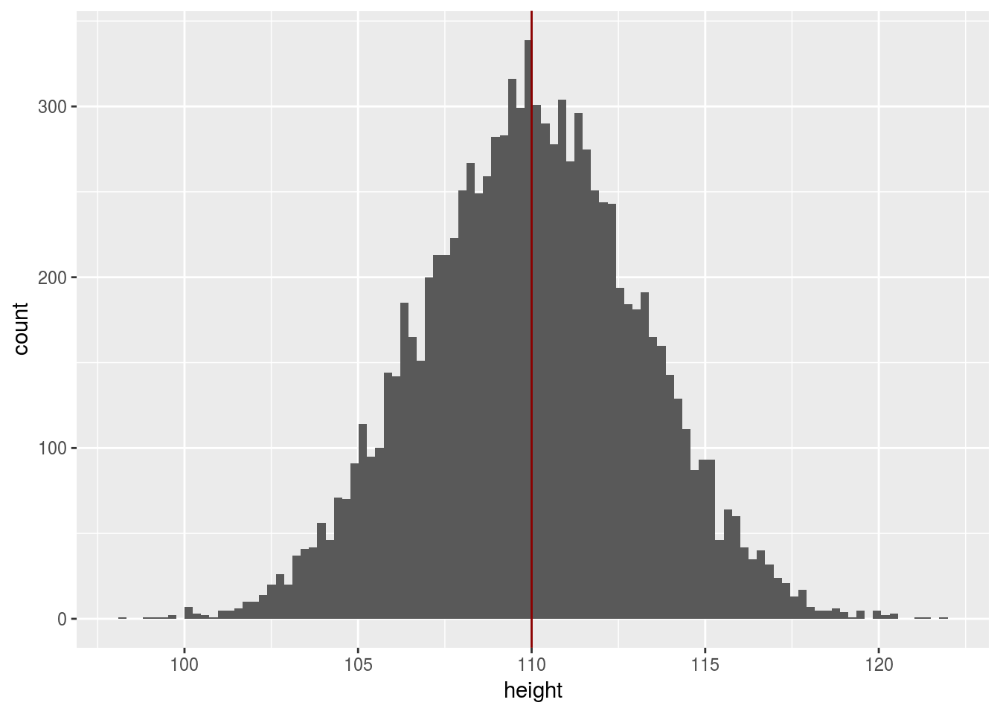
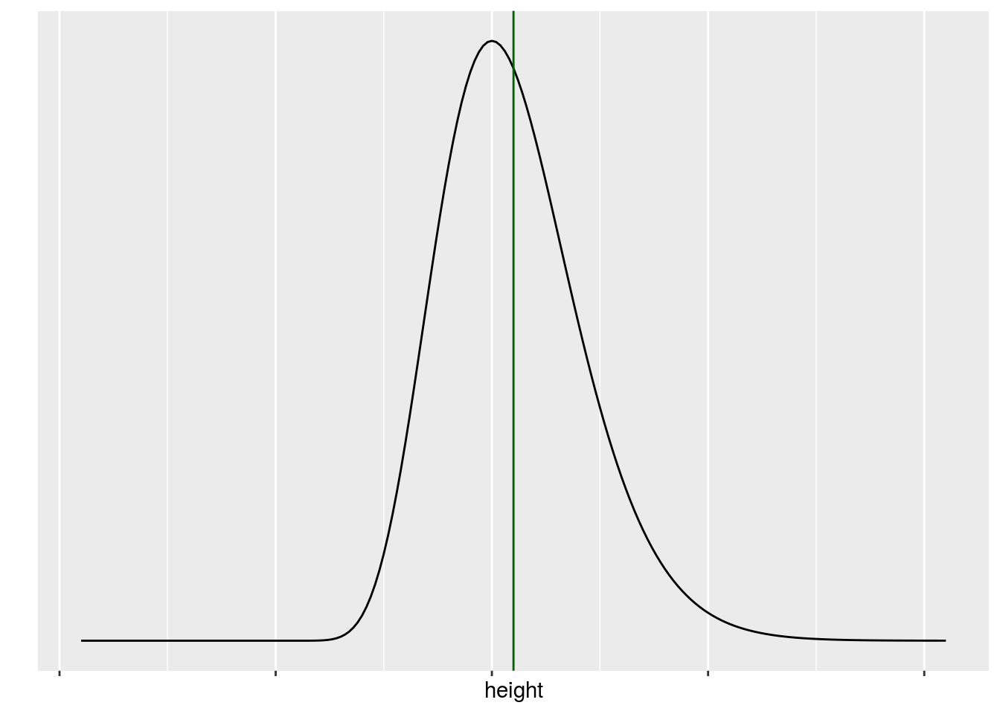
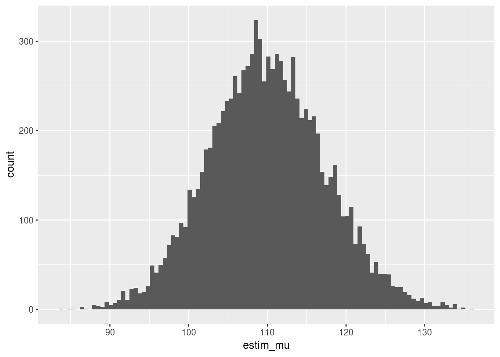

Variabilité d’échantillonnage
Statistique inférentielle : de l’échantillon à la population
En statistique, un objectif classique consiste à inférer des propriétés sur une population à partir d’une vision partielle de celle-ci : un échantillon
Un exemple central
Une population extra Terrestre réside sur la planète Halieutik . Cette population est inconnue des habitants de la planête Statistik mais très avancée technologiquement, les habitants d’Halieutik ont construit un vaisseau pour rendre visite à la planète Statistik. Ce vaisseau ne contient que 10 individus.

La population de Statistik ne connaît pas les motivations des habitants d’Halieutik et souhaite faire progresser sa connaissance de la morphologie sur cette nouvelle espèce (pour se préparer à toutes éventualités).
A partir des 10 individus qui descendent du vaisseau que peut-on raisonnablement affirmer sur la population générale d’Halieutik ?

C’est un problème de statistique
Plus généralement
Contrairement à ce qu’on pourrait croire, c’est un problème très classique en statistique dans tous les domaines d’applications :
- Intentions de vote de la population à partir d’un échantillon de la population,
- Evaluation du rendement de la parcelle à partir de quelques prélévements,
- Evaluation de la préférence des consommateurs à partir d’un panel,
- Evaluation de la structure des tailles de captures à partir des débarquements

Formaliser le passage de l’échantillon à la population
Il faut poser des hypothèses. Par exemple si l’on s’intéresse à la taille moyenne des habitatnts d’Halieutik.
On peut imaginer un modèle de la répartition des tailles dans la population.

Si on choisit complètement au hasard 10 individus dans cette population quelle est la situation la plus probable ?



Puisque la répartition des tailles au sein de la population suit une loi normale, la taille d’un individu choisi uniformément parmi tous les individus d’une grande population suit également une loi normale. L’aléa vient du choix de l’individu parmi tous les individus possibles.
Estimateur versus Estimation
En situation réelle, on peut contrôler (un peu) comment on choisit les individus au sein d’une population et à partir de notre échantillon on va chercher à construire de l’information sur \(\mu\) le paramètre qui règle la moyenne de la population.
Comment approcher \(\mu\) ?
On peut construire un estimateur : une variable aléatoire qui essaie de s’appricher de la quantité inconnue \(\mu\).
\(\mu\) désignant la moyenne de la population on peut construire la variable aléatoire, appelée moyenne empirique
\[\bar{X} = \frac{1}{n} \sum_{k=1}^{n} X_k,\] où \(X_k\) désigne la taille du k\(^{\mbox{ème}}\) individu choisi au hasard (par conséquent la taille de cette individu est bien une variable aléatoire) et \(n\)désignant la taille de l’échantillon.
Une fois qu’on a effectivement sélectionné nos individus, la taille n’est plus aléatoire, on a une réalisation de notre estimateur, c’est une estimation.
Si on s’intéresse à la taille de notre population venant d’Halieutik, l’estimateur est la moyenne empirique et sa réalisation, i.e. l’estimation la moyenne de l’échantillon.
20 vaisseaux sont arrivés sur Statistik, chacun contenant 10 individus dont on a mesuré la tailleéchantillons de taille provenant de la même population ont été relevés (data/height_sample_i.Rdata).
Construire une estimation de la taille de la population pour chaque échantillon et représenter les 20 obtenus sous forme d’histogramme.
Que constatez-vous ?

Et avec davantage d’échantillons

Ainsi on montre que la loi de \[\bar{X}_n \sim \mathcal{N}(0, \sigma^2/n)\] ### Distribution des tailles dans la population
Que se passe t il si, au sein de la population la distribution des tailles ne suit pas une loi normale ?
f1 <- function(x, df, mean){
mean + dt(x-mean, df = df)
}
p2 <- ggplot(data = data.frame(height = c(mu - 20 * s, mu + 20 * s)), aes(height)) +
stat_function(fun = dgamma, n = 201, args = list( shape = mu * 0.1, rate = 0.1)) + ylab("") +
theme( axis.text.x=element_blank()) +
scale_y_continuous(breaks = NULL) +
geom_vline(xintercept = mu, col = "darkgreen")
suppressWarnings(print(p2))
Effet du choix de l’échantillon
Le vaisseau spatial est petit donc au lieu de choisir uniformément dans la population des habitants à envoyer on va privilégier les petits.
## fonction de selectivité
selectivity <- function(x, a, b){
t_x <- exp(-a * (x - b))
return(t_x / (1 + t_x))
}
## les candidats choisis preferentiellement selon leur taille
## probabilité qu'un individe de taille x soit dans l'échantillon
pref_height_sampling <- function(mean, sd, a, b){
iter_max <- 100
x_prop <- rnorm(1, mean = mean, sd = sd)
keep <- (runif(1) < selectivity(x_prop, a = a, b = b))
iter <- 1
while((!keep) & (iter <iter_max)){
iter <- iter + 1
x_prop <- rnorm(1, mean = mean, sd = sd)
keep <- (runif(1) < selectivity(x_prop, a = a, b = b))
}
if(iter >= iter_max){
cat("Nombre maximun d'itérations atteint")
return(NULL)
} else {
return(round(x_prop,2))
}
}
## echantillonner n individus
pref_n_sample <- function(n , mean, sd, a , b){
round(
sapply(1:n, function(s_){
pref_height_sampling(mean = mean, sd = sd, a = a, b = b) } ), 2)
}
## les tailles observées
height <- pref_n_sample(n, mean = mu, sd = s, a = 0.5, b = mu + 10)
mean(height)## [1] 108.818Distribution de l’estimateur
n_dataset <- 10000
height_100_rep <- sapply(1:n_dataset, function(s_){
pref_n_sample(n, mean = mu, sd = s, a = 0.5, b = mu + 10)
})
dim(height_100_rep)## [1] 10 10000ggplot(data.frame(estim = apply(height_100_rep, 2, mean)), aes(x = estim)) + geom_histogram(bins=sqrt(n_dataset)) + geom_vline(xintercept = mu, col = 'darkred')
L’estimateur est biaisé.